逻辑开关¶
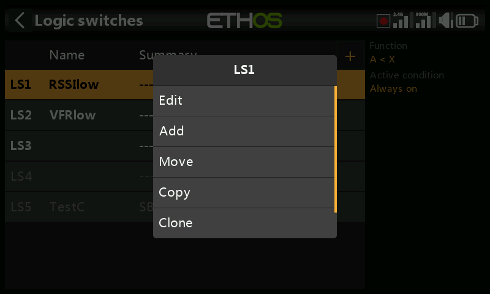
逻辑开关是用户自行编程的虚拟开关——它们并非实体控件，但可以在任何能使用实体开关的位置作为程序触发条件使用。每个逻辑开关都会根据其输入（其他开关、遥测数值、混控数值、计时器数值、陀螺仪/教练通道等）对所配置的条件进行判定，从而输出 True（成立）或 False（不成立）。最多支持 100 个逻辑开关；默认情况下一个都没有。通过 + 添加；已定义的开关在菜单标签中为 True 时显示为绿色，为 False 时显示为红色。点击已有的逻辑开关可进行 编辑/移动/复制-粘贴/克隆/删除。
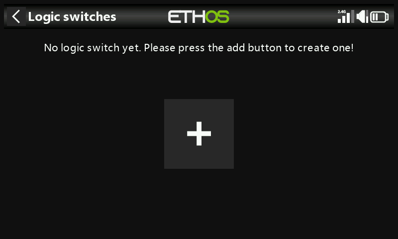
功能¶
每种功能都支持正常输出或反向输出。
- A ~ X —— 当信号源
A近似等于固定值X（误差约 10% 以内）时成立。通常比精确相等更实用——
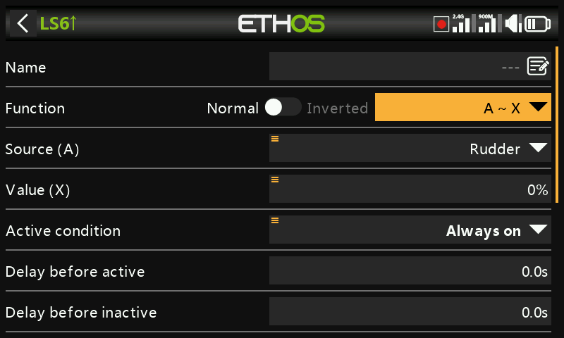
——因为若使用 A = X，遥测读数可能在目标值 8.4V 附近于 8.5V 与 8.35V 之间抖动，而始终不会恰好落在 8.4V 上，开关也就永远不会触发。
- A = X —— 仅当 A 精确等于 X 时成立。
- A > X / A < X —— 当 A 大于/小于 X 时成立。
- |A| > X / |A| < X —— 同上，但比较的是 A 的绝对值（忽略正负号）。
- Δ > X —— 当 A 在检测间隔内的变化量（差值）至少达到 X 时成立。间隔设为 --- 表示无限时间窗口。
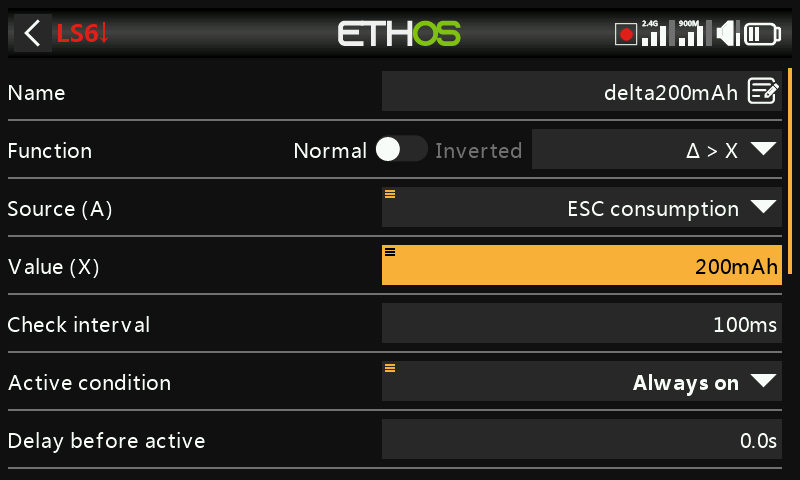
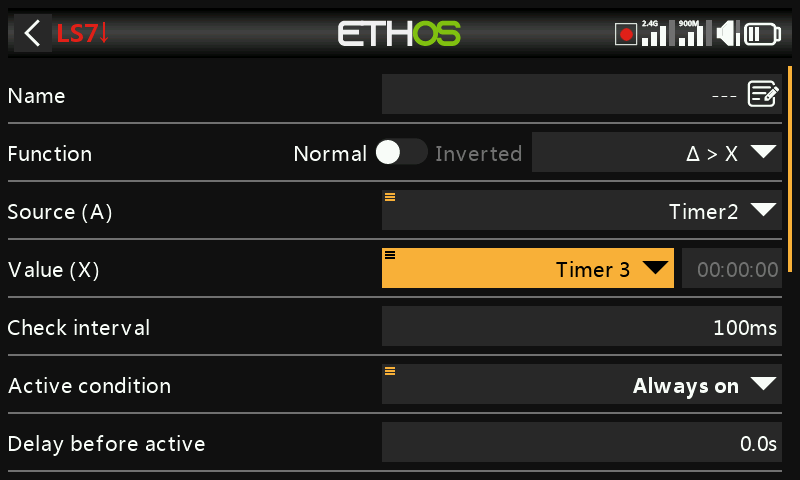
- |Δ| > X —— 同上，使用变化量的绝对值。
- Range —— 当
A落在指定范围内时成立。
- AND —— 仅当所列出的每一个信号源（Value 1…N）均成立时才成立。
- OR —— 当所列信号源中至少有一个成立时即成立。
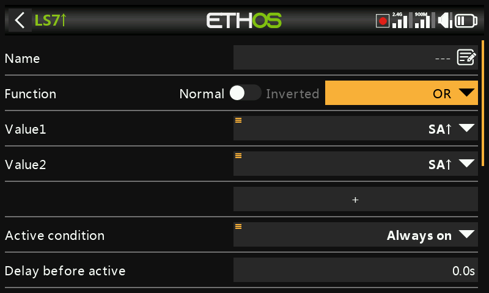
- XOR（异或）—— 当所列信号源中恰好有一个成立时才成立。
- Timer generator（计时器发生器）—— 自由运行、持续开关切换：开启持续 Duration active 时长，关闭持续 Duration inactive 时长。
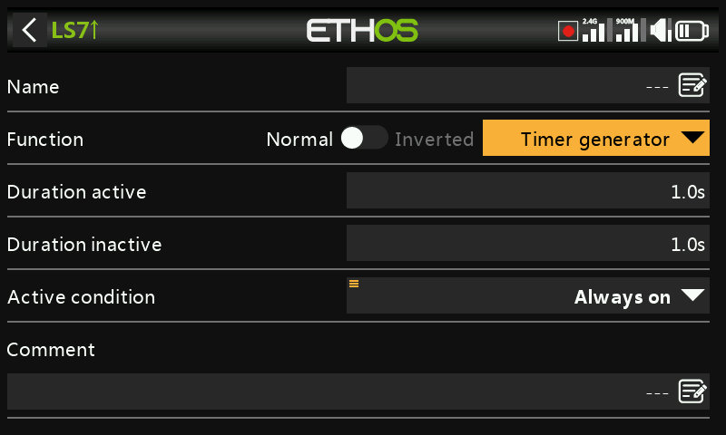
Sticky¶
一旦满足 Trigger ON 条件即锁存为 True，并保持 True 直至满足 Trigger OFF 条件——同时可选地受 Active condition 门控（当该条件为 False 时，输出被强制保持为 False；Sticky 的内部锁存仍在后台继续判定，一旦 Active condition 重新变为 True，锁存值即被输出，但受延时设置影响）。
自 Ethos 1.6.2 起，两个触发条件均可附加 Edge 修饰符（在触发条件上长按 ENT，选择 Edge——以 † 前缀标示），以实现更精细的控制：
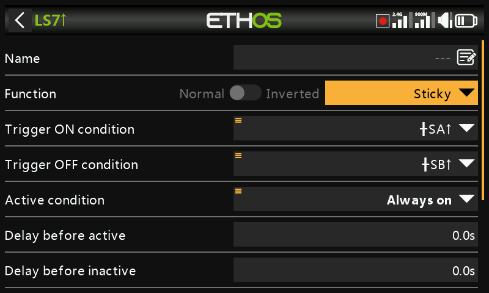
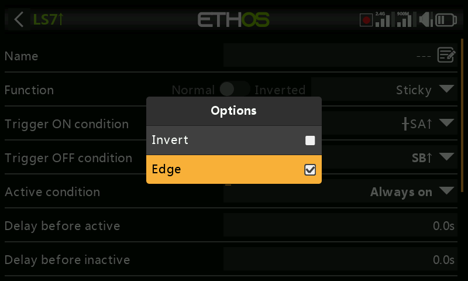
- Trigger ON
SA（无延时） —— SA 变为高电平的瞬间即锁存为 True。 - Trigger ON
SA（delay = 1s） —— SA 变为高电平后 1 秒锁存为 True，前提是 这 1 秒结束时 SA 仍处于高电平。 - Trigger ON
†SA（delay = 1s） —— SA 变为高电平后 1 秒执行 True→False 的锁存，无论届时 SA 是否仍为高电平（边沿事件已经发生，延时只是决定结果的时间点）。
Trigger OFF 的行为与之相反但原理相同。延时在 Active condition 之后生效——因此 Active condition 发生变化时，会重新开始延时计时，之后锁存值才会送达输出。若两个触发条件同时从 False→True，则 Sticky 的输出会切换一次。另请参见下文的通用参数。
Edge¶
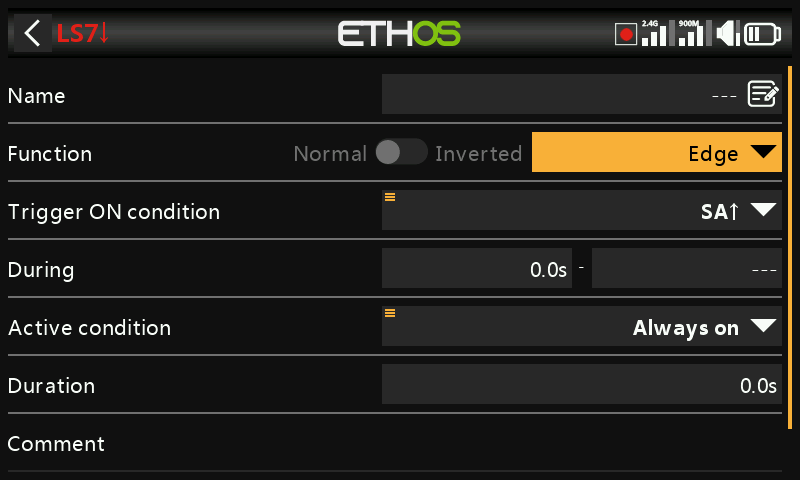
一个瞬时脉冲：触发条件满足后，输出 True 持续 Duration 所设时长。During 是一个 [t1:t2] 时间对，用于精确控制触发时机：
- 上升沿，During = 0.0s —— 在 Trigger ON 由 False→True 的瞬间触发。
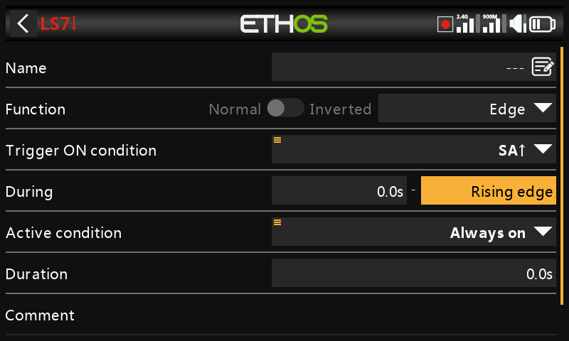
- 上升沿，During ≥ 0.0s（例如 5.0s） —— 在 Trigger ON 变为 True 后 5 秒触发，并忽略这 5 秒窗口内出现的任何较短"脉冲"。
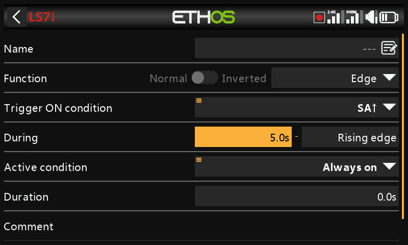
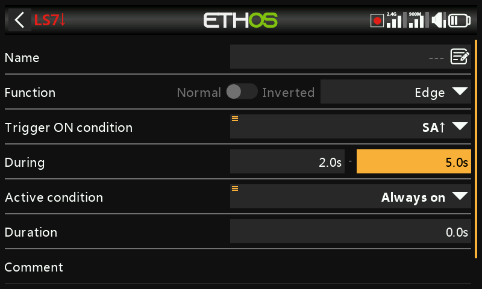
- 下降沿，During = 0.0s —— 在 Trigger ON 由 True→False 的瞬间触发。
- 下降沿，During ≥ 0.0s（例如 3.0s） —— 在 True→False 的跳变时触发，但前提是此前已保持 True 至少 3 秒。
- 脉冲（同时设置 t1 与 t2） —— 仅当 Trigger ON 在该时间窗口内完成 False→True→False（例如在 2 秒至 5 秒之间）时才触发。
通用参数¶
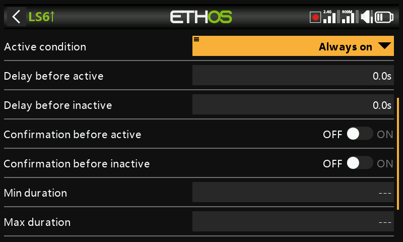
- Active condition —— 以与上述 Sticky 相同的方式对开关输出进行门控。可选项：Always on（始终开启）、开关/功能开关/逻辑开关/微调位置、Telemetry（遥测）、飞行模式，或某个系统事件（油门保持、油门切断、油门激活、遥测激活、RSSI 过低、教练激活、飞行数据复位）。
- Delay before active / Delay before inactive —— 条件需保持 True（或 False）多长时间后输出才随之改变，最长 60 秒。对 Timer generator 与 Edge 无效。（延时用于消除电压瞬降抖动的示例，参见操作指南：电池容量警告。）
- Confirmation before active / inactive —— 在状态实际改变之前提示用户确认（并提供取消选项，以应对触发过于频繁而无实用价值的情况）——适合用于门控有风险的操作，例如在远程关闭地面车辆动力前进行确认。
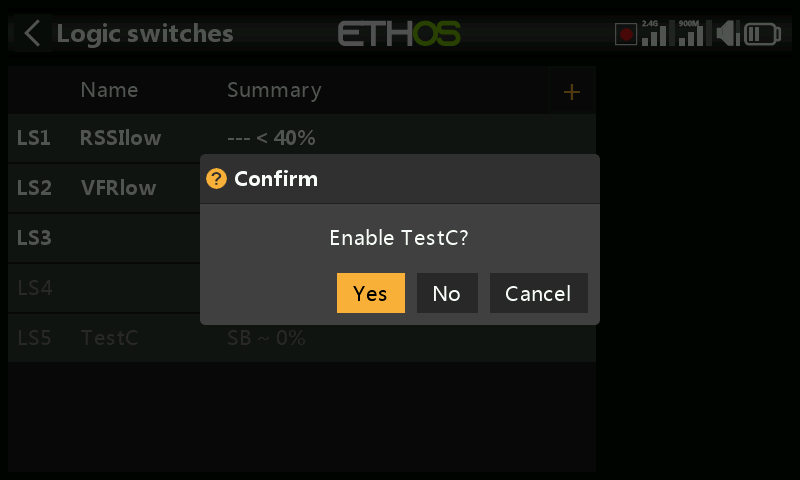
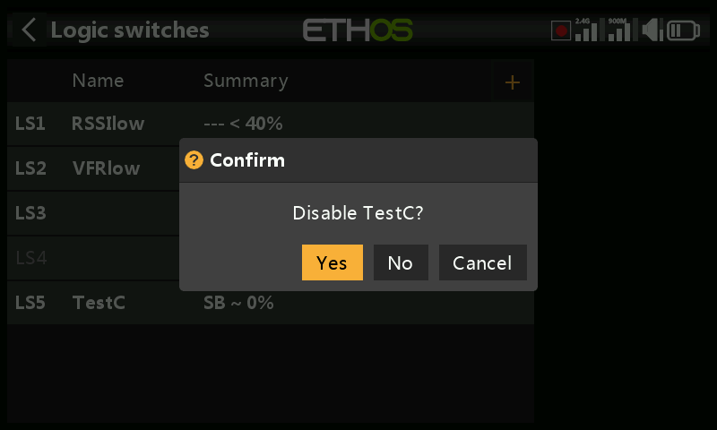
- Min Duration —— 一旦成立，至少保持 True 这么长时间。若保留为
---，输出可能仅在单个混控周期内为 True——短到在界面中甚至看不到该行变为粗体。 - Max Duration —— 一旦成立，经过该时长后自动恢复为 False（即使条件仍然满足）。两个时长最长均为 60 秒。
- Comment —— 自由文本，会在该开关被添加到数值小组件的任何位置显示，用于说明其用途。
与遥测配合使用¶
Telemetry active 系统事件（或以遥测传感器为信号源、仅在该传感器有数据上报时才成立的开关）可用于实现"当前是否正在接收遥测"这类条件。
Warning
由基于遥测的逻辑开关门控的混控需要第二个使用同一开关但反向的混控动作，以便在遥测丢失后混控仍有有效数值——请记住，未激活的混控输出为中立位（0% / 1500µs，在油门通道上则为半油门）。或者使用 Offset 动作，它本身就内置了独立的激活/未激活数值——例如以 0（特殊值）为信号源，并将偏移量设置为：LS3 激活时混控读数为 +100%，未激活时为 −100%，这样一个动作即可覆盖两种情况。
信号源之间的比较¶
信号源通常是与固定值进行比较，但也可以直接比较两个同类型的信号源——例如两个计时器、两个电压值或两个转速传感器。
忽略来自从机的教练输入¶
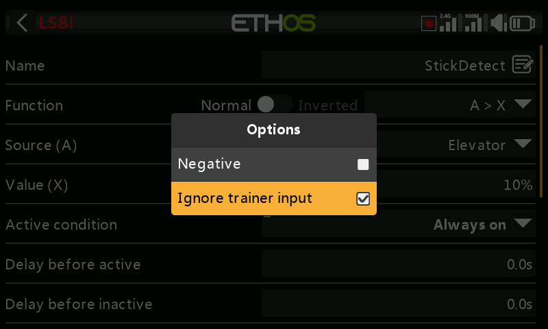
信号源的选项中可以排除来自所连接学员（从机）遥控器的教练输入——通常用于监视教练机本身摇杆动作的逻辑开关（例如在出现异常时立即介入），避免学员的输入也触发它。常与门控教练机自身 Active condition 的教练开关配合使用。